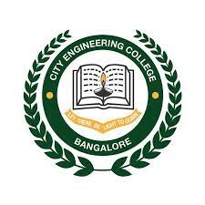

City College Jayanagar (CCJ) Affiliated to Bangalore University, Approved by AICTE, New Delhi and recognised by Government of Karnataka, offers full time Pre-University (PUC), Undergraduate (UG) and Post Graduate programmes in Science, Commerce and Management Streams. The College offers 1 year full time PG Diploma Programs in Retail, E-Commerce and Hospitality Management. Along with the prescribed syllabi, the college offers Value Added Programs for all the courses across the semesters. These value added programs help our students to stay updated with changing market scenarios, familiarize with new technology tools, enhance various soft skills and be industry ready to contribute effectively in the eco system. City Engineering College (CEC), established under Jayanagar Education Society by Dr K.R Paramahamsa, Chairman in the year 2001. CEC is one of the most sought colleges by students from across the country for Engineering and Management Education. The college believe in providing a high-quality education to the prospective professionals of the country for which necessary quality bench marks have been put in place, in the areas of faculty recruitment, training and development, teaching and learning process, student’s grooming, external academic audits and feedback system for academic enhancement. City Engineering College is affiliated to Visvesvaraya Technological University (VTU), Approved by AICTE, Recognized by Govt of Karnataka and accredited by NAAC. The college is also included under 2(f) of the UGC Act, 1956. Our college offers a wide range of undergraduate and postgraduate programs across three faculties: Arts, Science, and Commerce. Below is a list of departments and courses offered under each faculty.